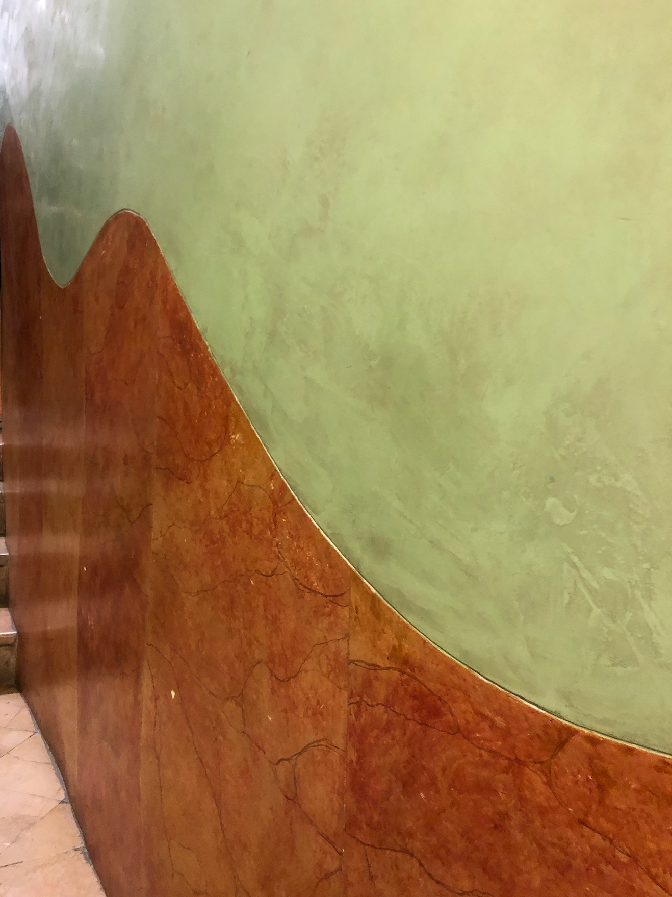
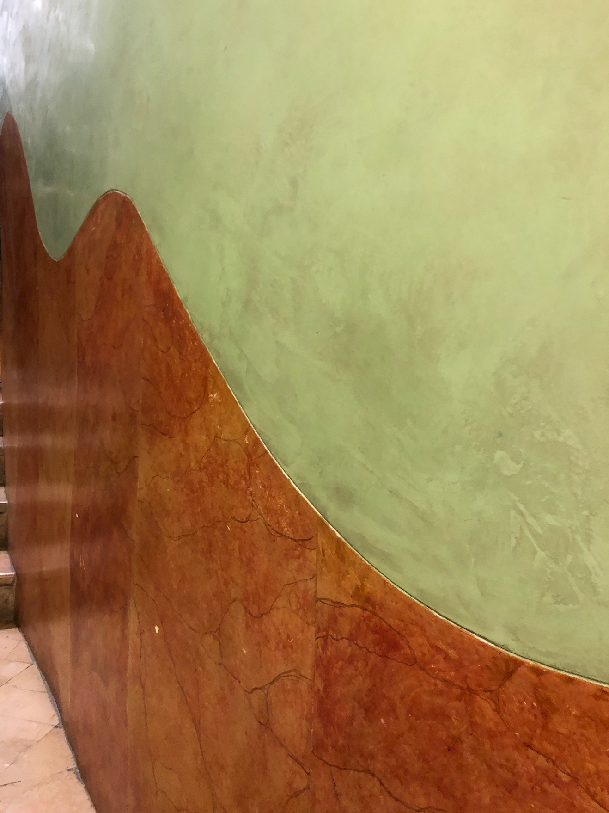
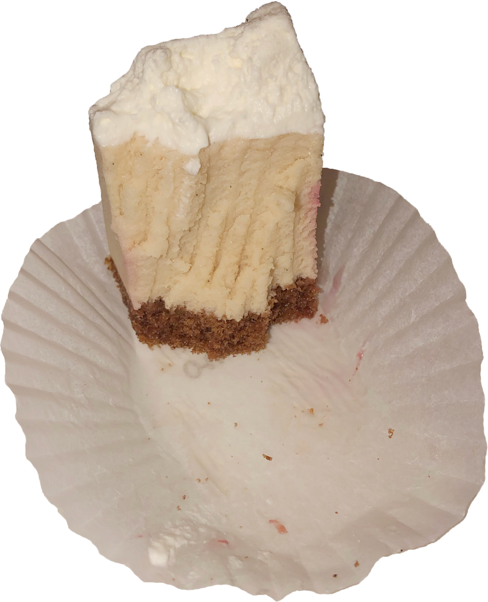
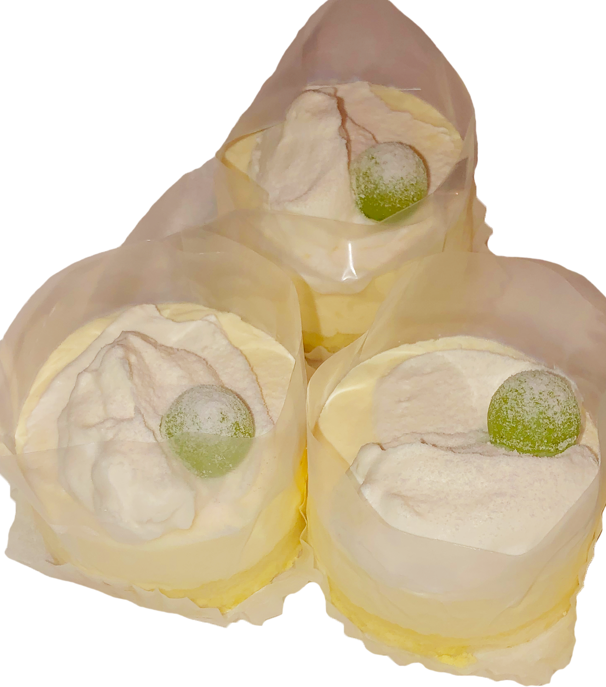
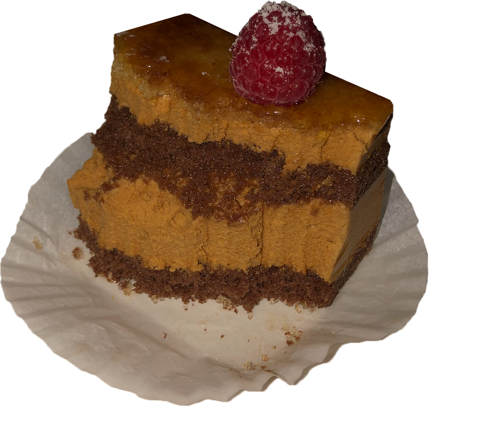
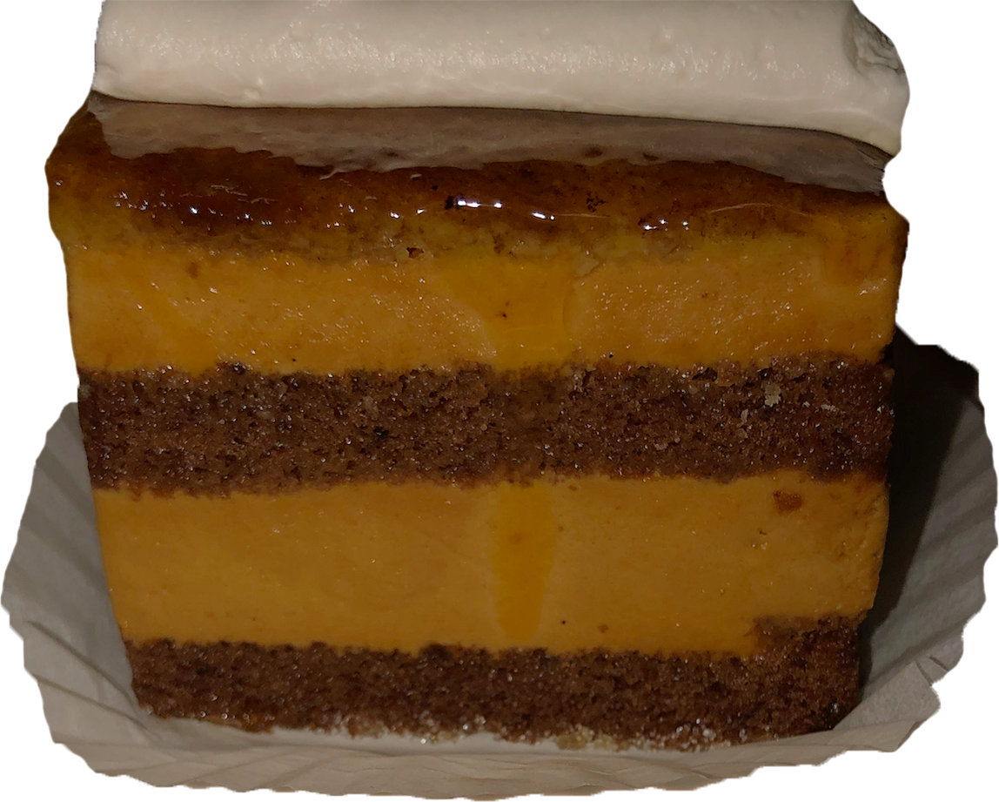
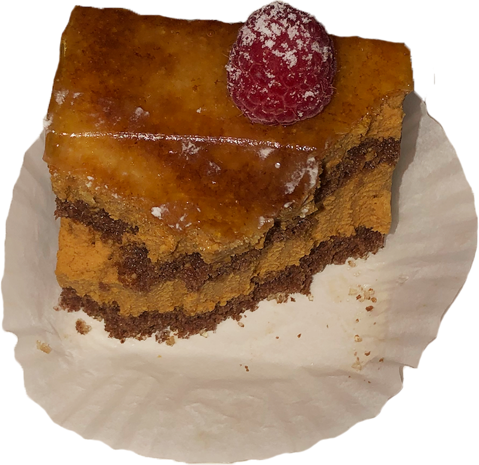
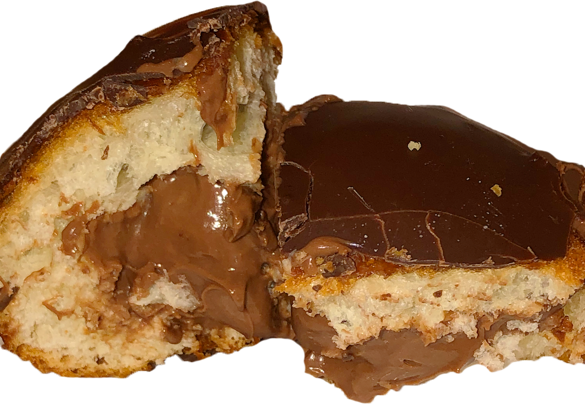
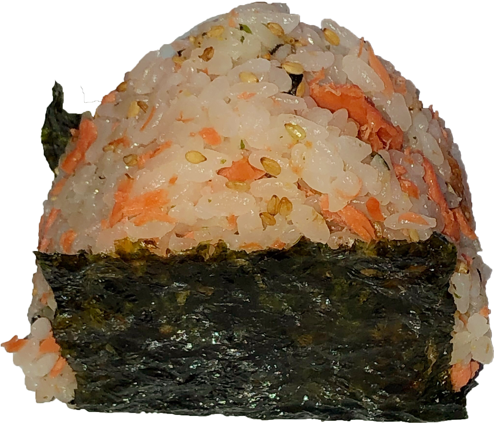
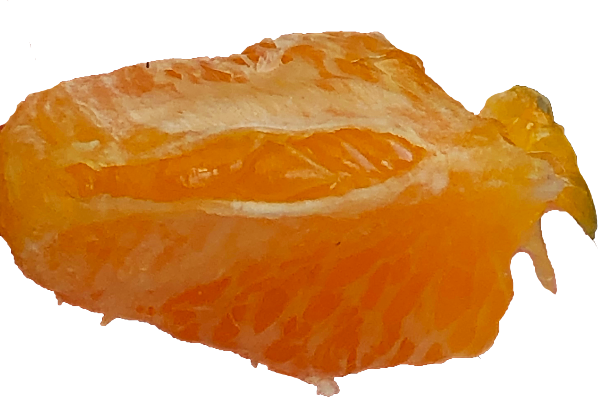

1

 



       

hello
hello again
I deliberately avoid the numbers. I don't want to know how many minutes or weeks have passed since I arrived in this paradise. The numbers are deceiving yet they tell me more than I wish to know. I don't know how long I've been here. It's a terrifying thing to think how we can recall past lives nonchalantly, like picking stickers from a sheet of 12 or 20. I keep thinking the adhesive works once, and then never again. Buy the sheet, hold on to it, find the courage or carelessness to peel the dot, stick it to an unworthy surface, lose it forever. I wish I had better memory. But I don't even know how long I've been here. So I'm left with stickers that I'm not ready to use yet. Like mementos/trash, I want to hold on to it for a while before I let it go. Sometimes I never let it go, but I also never look at it.
*
What am I here for? Disco balls, mid-century furniture, egg-yolk yellow, cakes up close, glassware that’s improperly colored, or discolored maybe? But that’s part of the charm. You can find that kind of thing at the local Amvets where aging women and men with skin that’s wrinkled like raisins and dull like the yolk of a hardboiled egg roam from aisle to aisle. Or, find the same thing but shiny at the Design Store on Spring Street because you can afford to purchase the senseless prestige that comes with less time on earth.
*
Sadness is circulating now. My eighth finger stings along the thin red line beneath my (1/10) chipped blue nail. It's not January anymore, or February, but April in 39, now 38 minutes. My left ear lobe throbs as a red bump behind my (3/5) piercing that should have healed six weeks after December 26, 2018 because I felt bored that morning and bold that night. Redness colors the once olive and white surfaces of my body, and blackness colors my head.
*
My face burns still, but I can manage with my almost white eyes and blurred vision. I'm inside, producing new sides and receiving feedback from other sides. They tell me my dome is not merely a dollop of cream, but a full egg or an avocado. They call it fleshy, alien-like, art in its ambiguity. It is not beautiful or ugly or interesting, but organic. The bananas are ripening. I will use them to make bread now or once they turn black. The sun is shining less. It's unusually warm but cold inside where we move from cold sheets to shelves to hot showers with steam that wraps us in warmth for three to 14 minutes depending on whether we ran or she made dinner or you went first. The time blends like peanut-yogurt-cashew-butter with agave and cinnamon, like the mixture that drowns my darkened stacks of gold cakes. Morning rituals have grown fat with Barbaro, vinegar, silver spoons, and hot water. My coffee cools faster than I would like on Mondays through Wendesdays, but at least it lasts from 10:30 through 1:30.
I deliberately never look at it.
*
What am I here for? Less time on Earth.
*
Sadness is circulating now, and blackness colors my head.
*
My face burns from 10:30 through 1:30.